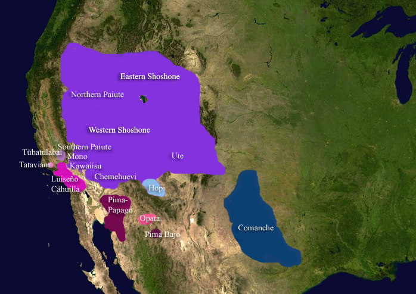
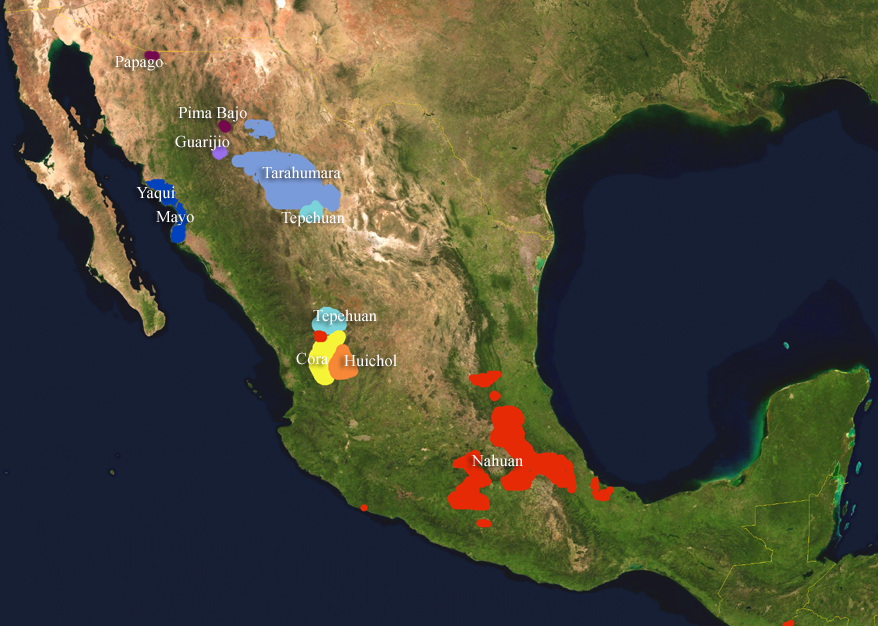
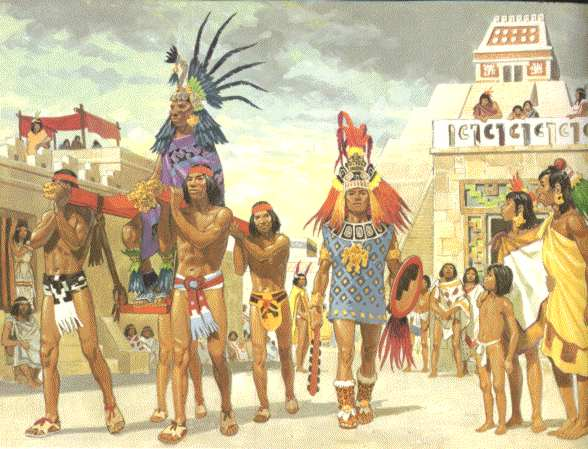
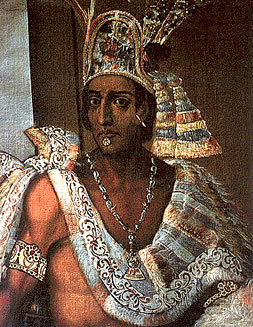
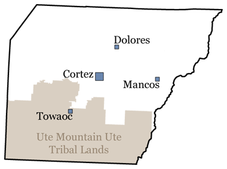
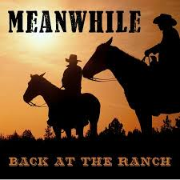
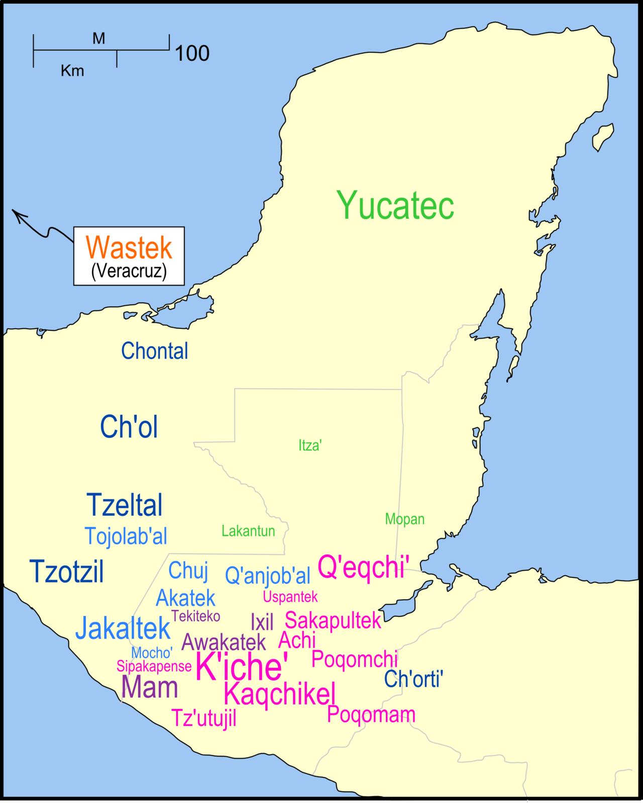
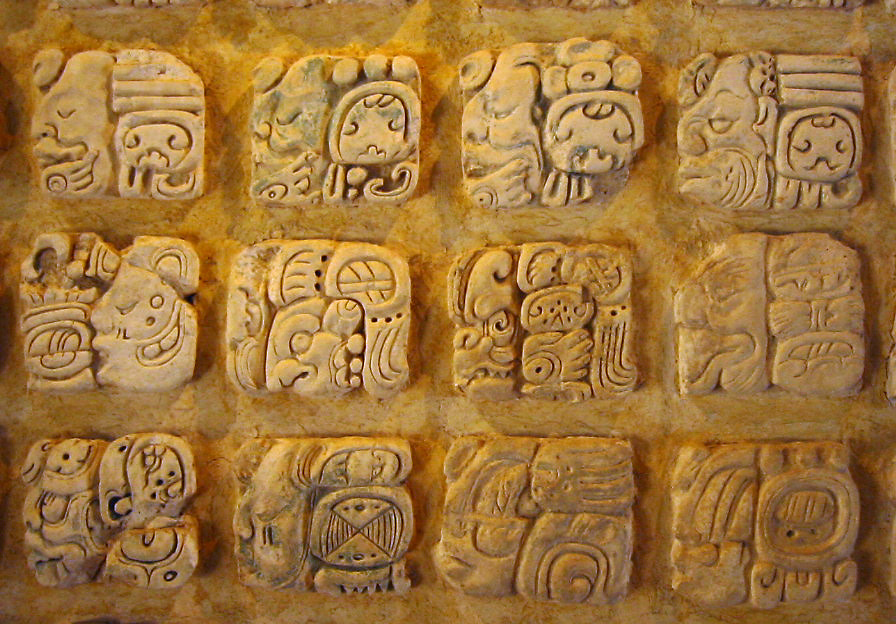
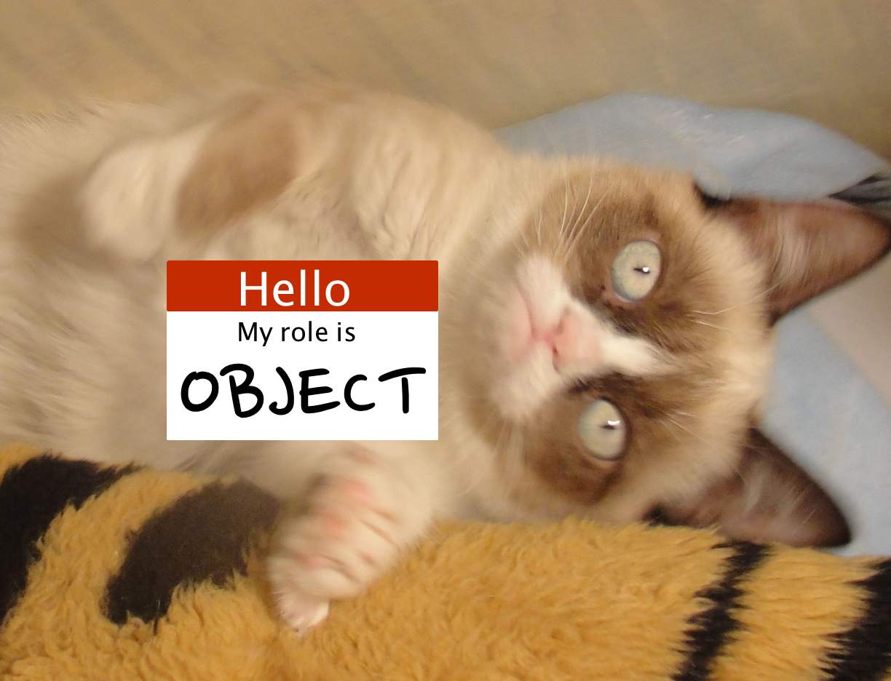

<lang>Nahuatl</lang><br><ldata>Uto-Aztecan - Mexico</ldata> <iframe data-autoplay width="840" height="500" src="http://www.youtube.com/embed/7e0rp_lisjo"></iframe> ROCKERCOATL - Song unnamed --- ### Administrative Notes * <danger>Recitation is cancelled on 11/21</danger> * (Let's face it, you weren't coming anyways.) * HW6 is beefy. * We'll have a review session during the last week of class * The final recitation is cancelled too. --- ### A few notes from Monday's talk * Any questions or comments? Surprises? * Note how many theoretical points were up to debate * "Well, we're not entirely sure what this marks" * This is what languages look like when you zoom in! * Certainty can only come with distance --- # Languages of Mexico and Meso-America ### LING 1020 - Will Styler --- ### Today's Agenda * Uto-Aztecan Languages * Mayan Languages * Agreement vs. Case --- ## Uto-Azetcan ---  ---  --- ### Uto-Aztecan Languages * Spoken in the US and in Mexico * 30 languages * One of the larger families in North America --- ### Prominent Uto-Aztecan Languages * Nahuatl - ~1.5 *million* speakers * Tarahumara - ~45,000 speakers * We'll talk about Tarahumara Monday * Huichol - ~17,000 speakers * Tepehuan - ~16,000 speakers * Pima - ~15,000 speakers * Hopi - 7000 speakers --- ## Nahuatl! --- ### Want to incur Will's wrath? <!-- .element: class="fragment" --> --- <danger>Nahuatl is not pronounced "Na-waddle"!</danger> --- # /ˈnaːwatɬ/ * ɬ is a voiceless lateral fricative --- ### Nahuatl was the language of the Aztec People  --- ### Today's Messed-up Colorado History Lesson --- ### Montezuma was a great Aztec Leader  --- ### He was killed by Spaniards led by Hernan Cortez <img class="big" src="lotwimg/cortez.jpg"> --- ### Montezuma has a county in Colorado <img class="big" src="lotwimg/montezuma_county.gif"> --- ### The county is administered by the city of Cortez  --- Seriously, Colorado? ---  --- ### English has a lotl of borrowings from Nahuatl * Coyote (from coyōtl) * Mesquite (from mizquitl) * Peyote (from peyōtl) * Tomato (from tomatl) * Chocolate (from xocolātl 'bitter water') --- ### And I mean a lotl! * Chili (from chīlli) * Avocado (from āhuacatl) * Guacamole (āhuacamōlli 'Avocado Sauce') * Tamale (from tamalli) * Chipotle (from chilpoctli 'smoked chili') --- ### Axolotl ([Image Source](http://www.warrenphotographic.co.uk/00108-albino-axolotl)) --- <lang>Nahuatl</lang><br><ldata>Uto-Aztecan - Mexico</ldata> <iframe data-autoplay width="840" height="500" src="http://www.youtube.com/embed/ZTBABGLJzIA?start=10"></iframe> --- Here's a picture of a gerbil in a sweater, because I can't think of a transition. --- ## Mayan Languages ---  --- ### Mayan Languages * Spoken in Central America * *Really* well documented * Around 6 *million* speakers * K'iche has the most (2 million) --- ### Mayan Languages were the language of the Mayan Civilization <img class="big" src="lotwimg/chichenitza.jpg"> --- ### The Maya had an awesome ideographic writing system  --- <iframe data-autoplay width="840" height="500" src="http://www.youtube.com/embed/u9LRbLXMzyM"></iframe> --- Nova did a whole special on this. * ### You can [watch it online for free](https://www.youtube.com/watch?v=H5ppfC6y-5s) --- (Modern Mayan languages use the Latin alphabet, though) --- ### Features of Mayan Languages * Agglutinating and Polysynthetic * VOS ordering * Numerical Classifiers * Relational Nouns! --- ### Relational Nouns --- ### Relational Noun A noun used to express prepositional meaning * These are an areal feature for Central America! --- <lang>Zapotec</lang><br><ldata>Oto-Manguean - Mexico</ldata> Mnnààa' zuu zh:ààa'n bzêiny. woman NEU.stand the.buttocks.of deer 'The woman is standing at the buttocks of the deer' --- <lang>Maya</lang><br><ldata>Mayan - Mexico</ldata> u-wach ulew it-face earth "on the earth" --- <lang>Zapotec</lang><br><ldata>Oto-Manguean - Mexico</ldata> loh gyizhi'iilly face chair 'on the chair' --- <section data-background="img/clickerbkgrnd.png"></section> ### Which of the following direct translations uses a relational noun to express 'the squirrel is in the bus'? A) 'Squirrel in bus' B) 'Squirrel bus.LOCATIVE-CASE C) 'squirrel stomach bus' D) 'squirrel entered bus' --- <section data-background="img/clickerbkgrnd.png"></section> ### Which of the following direct translations uses a relational noun to express 'the squirrel is in the bus'? A) 'Squirrel in bus' B) 'Squirrel bus.LOCATIVE-CASE <correct>C) 'squirrel stomach bus'</correct> D) 'squirrel entered bus' --- <lang>K'iche</lang><br><ldata>Mayan - Mexico</ldata> <iframe data-autoplay width="840" height="500" src="http://www.youtube.com/embed/7zQSfU5HkUc"></iframe> --- <img class="big" src="humorimg/segway.jpg"> --- (Sorry, I needed a segue!) --- <img class="big" src="humorimg/badpundog.jpg"> --- # Agreement! --- ### "What's the difference between case and agreement?" --- ## Case marks roles on arguments! --- ### Russian Case Marking * Will videt kochku * Will-NOM see-3sg CAT-ACC * "Will saw the cat" --- ### With case, you make the arguments wear nametags * So you know what role the arguments are playing --- ### Will-NOM see-3sg CAT-ACC --- ### Will-NOM see-3sg CAT-ACC  --- ## Agreement marks identity on verbs! * "Rather than marking the arguments, let's just make sure the verb points to who did it!" --- <img class="big" src="lotwimg/chucknorriswashere.jpg"> --- ### Spanish Agreement Marking * Yo veo el gato * 1sg see.1sgsubj el cat * I see the cat * The arguments aren't marked * *... but the verb lets us know who did it!* --- ### Spanish Agreement Marking * Michael Bay hizo peliculas malas * Michael Bay make.3sgsubj.past movie-pl bad-pl * "Michael Bay made bad movies" * *We know that the plural argument did it!* --- ### Agreement can use many ways of showing identity * Person marking (1sg, 2sg, etc) * 2sg did it! * Number marking (singular, plural, etc) * The group with more than one item did it! * Gender marking (masc, fem, neuter) * It was the masculine thing! --- ### More ways of showing identity! * Noun class * It was the large, flat object! * New vs. old information markers * The thing I mentioned first did it! * <danger>Any others?</danger> --- ### Let's test your skills! --- <section data-background="img/clickerbkgrnd.png"></section> squirrele eta acornu squirrel.NOM eat acorn.ACC "The Squirrel ate the Acorn" A) "This is case" B) "This is agreement" --- <section data-background="img/clickerbkgrnd.png"></section> kula-knas Michael Bay Will judge-object.is.evil Michael Bay Will "Will judges Michael Bay" A) "This is case" B) "This is agreement" --- ## So, are we all in... # Agreement!? --- <img class="big" src="humorimg/badpundog.jpg"> --- ## Three methods of marking grammatical relations! * Word Order * Case * Agreement --- ### Some languages use more than one. * Spanish uses word order and agreement * Russian uses agreement and case * English uses agreement, word order, and case. * "I go" vs. "She goes", word order, and "he/him" --- (When more than one is used, it's usually because the first system isn't quite robust enough) * <danger>Why can't Spanish use just agreement?</danger> --- ### Wrapping up * Uto-Aztecan languages are awesome * We'll learn more Monday * Mayan languages are awesome * Know their features * Agreement and case are different * ... but both awesome --- ### ... and don't forget to order lots of ahuacamolli next time you go to Chilpoctli --- ## In Recitation: Something awesome. --- ## Next time: Tarahumara with Jesús Villalpando <correct>No reading.</correct> --- <huge>Thank you!</huge> ---